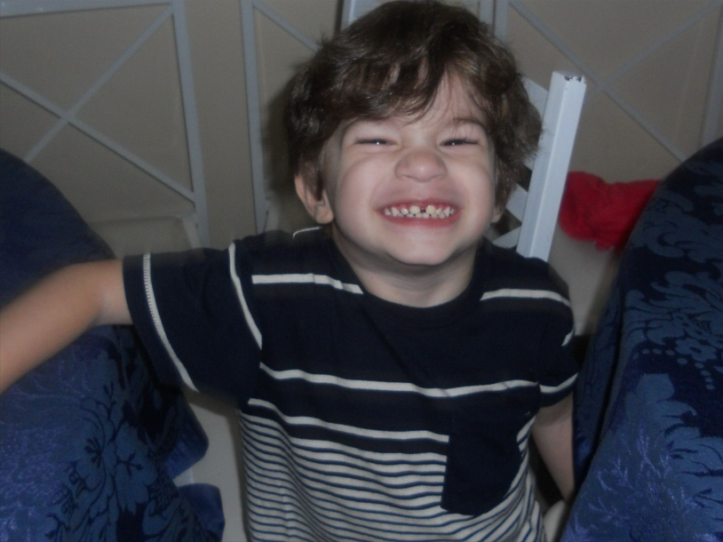
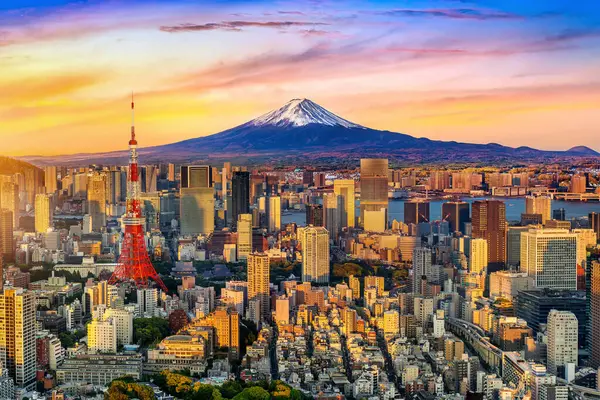
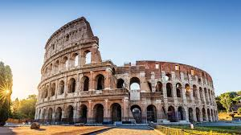
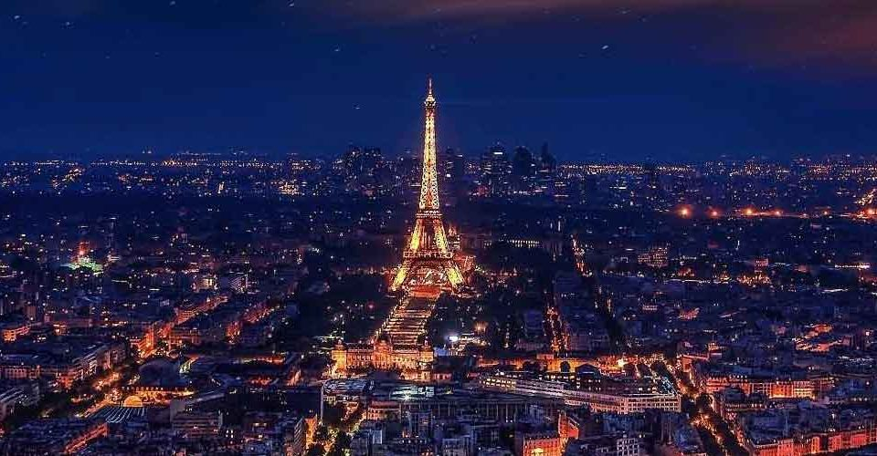
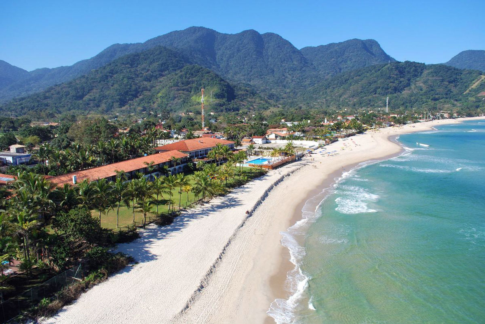
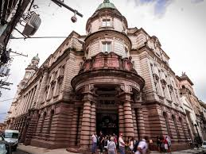
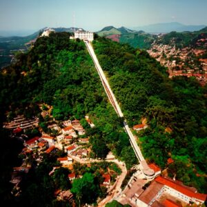

Quem sou eu?
Pedro Pizzi Conceição


Coisas que gosto de fazer:
- jogar vôlei
- Desenhar
- Ouvir música
- Dormir
- Ler
- Ver série/filme de terror
Algumas curiosidades sobre mim:
- Quase morri quanto eu tinha 7 anos.
- Sou alguem que prefiro frio do que calor
- Ja fiz aula de natação por 2 anos.
- Nunca viajei para fora do estado de São Paulo.
- Aprendi a fazer crochê quando eu era menor.
Lugares que quero visitar:
- Tokyo, Japão: Por causa de sua tecnologia avançada.

Para mais informações, podem acessar este link: Mais sobre Tokyo.
- Roma, Itália: Acho uma construção muito bonita e queria ver de perto.

Para mais informações, podem acessar este link: Mais sobre o Coliseu.
- Paris, França: Quero comer uma baguete perto da Torre Eiffel.

Para mais informações, podem acessar este link: Mais sobre Paris.
Lugares que já visitei:
- Maresias, São Paulo: Achei uma praia muito bonita e com pouca gente

Para mais informações, podem acessar este link: Mais sobre Maresias.
- Santos, São Paulo: Fui em uma viagem escolar.


Para mais informações, podem acessar este link: Mais sobre o Museu do Café.
Para mais informações, podem acessar este link: Mais sobre o Monte Serrat.